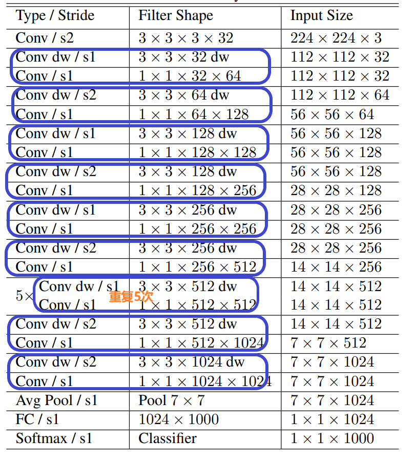
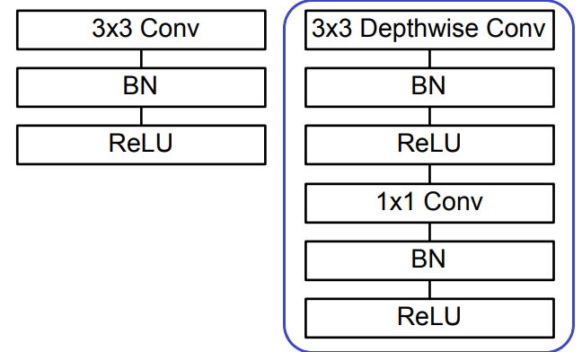
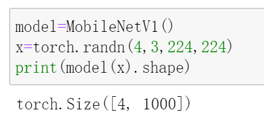

经典卷积架构:MobileNet-v1
MobileNet V1
MobileNet V1 有点像VGG，它们的网络结构都是单分支的，通俗点说就是：一条路走到底。
只不过，相比于VGG，MobileNet V1 大量使用了深度可分离卷积，在模型的预测能力变化很小的前提下，极大地提升了模型的速度。
ps：关于深度可分离卷积，可以查看这篇文章；关于VGG，可以查看这篇文章。
MobileNet V1 的网络结构如下：

其中，Conv表示普通卷积，Conv dw表示逐通道卷积，s1表示卷积步长为1，s2表示卷积步长为2。
PyTorch 实现 MobileNet V1
对于普通的卷积，即上面结构图中的Conv直接调用torch.nn.Conv2d就可以了；
而在上面的网络结构图中，每一个蓝色框起来的两部分组合起来就是深度可分离卷积，它包括了逐通道卷积(Conv dw)和逐点卷积(Conv，kernel_size=1)，其结构如下(左侧是普通卷积，右侧是深度可分离卷积)：

根据这个结构，就可以写代码实现深度可分离卷积了：
1 | import torch |
根据总的网络结构图，可以发现其中的point wise conv，即1x1卷积的stride始终为1，因此在上面的代码中就把这个超参数固定为1了。而对于depth wise conv，其stride不固定，因此使用的是传入的stride参数值。
有了上述结构，现在来实现整个MobileNet V1：
1 | class MobileNetV1(nn.Module): |
上述代码就是根据网络结构图，堆叠相应的卷积块，从完成了MobileNet V1网络的搭建。每一个卷积块都和网络结构图中的相应模块是对应的，因此强烈建议对照着网络结构图阅读以上代码，就自然清晰明了了。
注意，在卷积块堆叠完成后，我使用了更常用的自适应平均池化来代替平均池化，以便更能适应不同大小的输入。
现在来测试一下：

参考: